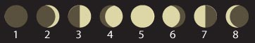
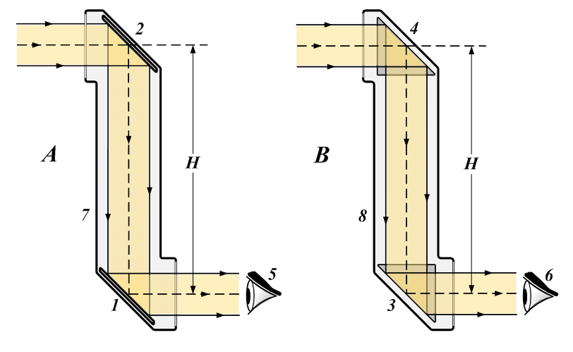
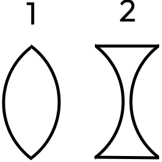
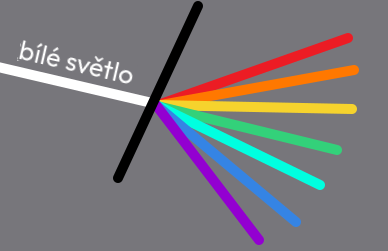

Světlo a optika
Informace o světle
- má více barev, každá jiné vlastnosti
- může ohřívat
- má různou teplotu barev
- šíří se přímočaře rychlostí 300 000 km/s ve vesmíru (i vakuu)
- zdroj je těleso, kde světlo vzniká (ne Měsíc)
- typy zdrojů
- přírodní
- umělé
Fáze měsíce

Obrázek CC BY-SA 3.0, Odkaz
1 - nov, 5 - úplněk
Střídají se za 28 dní, Měsíc se otáčí kolem své osy 28 hodin, to znamená, že vždy vidíme jednu stranu.
Odraz světla

Autor: Tamasflex – Vlastní dílo, CC BY-SA 3.0, Odkaz
- nastane, když světlo narazí na neprůhlednou překážku
- nejlépe odrážejí zrcadla
- dělení zrcadel
- rovinná - normální obraz, převrácený
- dutá ) - zvětšují
- vypuklá ( - zmenšují
- světlo se odráží podle zákona odrazu (pod stejným úhlem, takto funguje periskop)
Čočky
- vybroušená sklíčka, která lámou světlo
1 - spojka - paprsky spojuje v ohnisko
2 -
rozptylka - paprsky rozptyluje
Lom světla
{kind=link}
- nastane, když světlo jde z jednoho do druhého průhledného prostředí (vzduch, sklo, voda)
Oko
- má v sobě gelovou spojku
- získává obrácený obraz, který mozek převrací zpátky
Vady zraku
dalekozraké
- špatně vidí na krátko
- potřebuje spojku (brýle)
krátkozraké
- špatně vidí do dálky
- potřebuje rozptylku (brýle)
Rozklad světla
- bílé světlo se při lomu světla rozkládá na 7 barev (barevné spektrum) - červená, oranžová, žlutá, zelená, tyrkysová (aqua), modrá a fialová
- můžeme vidět u duhy, v bublině, v olejové skvrně...